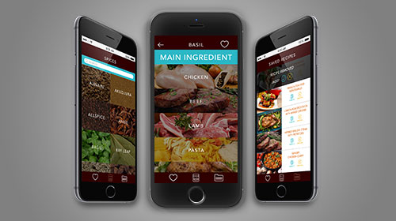

<!--Work Preview section-->
<section class="offset section">
			
	<!--Inner content-->
	<div class="innerContent">

		<!--Container-->
		<div class="container clearfix">
			<div class="fifteen columns">
				<div class="work-preview-close"></div>
			</div>
		</div>
		<!--Container-->
		
		<!--Container-->
		<div class="container clearfix">

			<div class="fifteen columns">

				<!--slider-->
				<div class="work-preview-slider clearfix flexslider" >

					<div>

						<ul class="slides">
							
							<li>
								
							</li>
							
							<li>
								
							</li>

							<li>
								
							</li>

						</ul>

					</div>
					
				</div>
				<!--slider-->

			</div>

			<div class="fifteen columns">
				<div class="seven columns info">
					<h1 class="title">Spicerack App<br><span>UX/UI</span></h1>
					<p>SPICERACK shows home cooks what spices pair nicely with various ingredients, other spices, and according to different cuisine. Through a simple process of choosing your spice, main ingredient, and palette, you will be given a number of recipes that work with your choices. You can even save your favourite recipes and spices for later. Shopping for ingredients will be easier and more efficient.</p>

					<!--<div class="social-icons">
						<ul>
							<li><i class="step fi-heart"></i><span>100</span></li>
							<li><i class="step fi-social-facebook"></i><span>620</span></li>
							<li><i class="step fi-social-twitter"></i><span>450</span></li>
							<li><i class="step fi-social-pinterest"></i><span>100</span></li>
						</ul>
					</div>-->

				</div>
			</div>


		</div>
		<!--Container-->
	
	</div>
	<!--Inner content-->

	
</section>